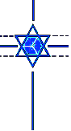
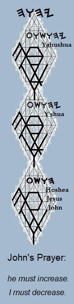

The CrucifixTake up your cross and follow me: . . . a place to start. |
 |
The Unity of Faith
The Crown Diamond crucifix depicts the cross as the
chariot of the spiritual nation Y'Shar-AL, and it lifts up the Shield of David
as an emblematic token of the spiritual king Yahushúa, projected into material
realms.
To engage the mystery is to embrace the dimensions of the inward heavens, whose doors open, in fellowship with those who follow in the footsteps of Y'Shúa, the true and faithful witness, the firstborn of many brethren, the man called the messiah. It's enough for a servant to be as his Lord. |
At a basic level, the cross is a metaphor for the human body because it affords the interface between mortality and immortality. The angels shouted for joy at the creation of man because It's understood that, by "taking up the cross," we might expect to journey within unanticipated realms, should we embark upon the path to perfection set forth in the parables of Y'Shúa; for the Spirit of YHWH is to serve as an active guide: both on the physical plane, if we can perceive Yah's guidance; and also, on metaphysical planes, whether we perceive it or not.
The mandate of the covenant written on our hearts is that we offer our dumb bodies and our receptive souls as living sacrifices in the course of everyday pursuits, understanding that the earthly body of flesh is very much like an antenna that serves as a receptor for the spiritual guidance that will be communicated in a variety of ways to the inward spiritual body, the human soul. The end of the walk is perfection, and its reward is Yah's gift of the immortal celestial bodies entrusted to those who overcome in the position of the Projection of Yah; for in the position of the Son, all are One-- even as YHWH is One.
To understand these things is to be prepared to follow in the footsteps of our brother, the master Y'Shúa: the firstborn Son of Man. In the paradigm of our brother Y'Shúa-- who walked and taught in the name of Yahushúa/the Shout of Yah-- the body is understood to be a dedicated servant to the Spirit. Positioned so, we are enabled to speak the Father's words and to perform the Father's will.
We are called, then, to offer our bodies and their faculties to the Living One as the days of our lives unfold, foregoing our own wills so much as we are able. This approach to our natural lives settles us in the position of the Son, in that we are seeking to measure and understand in our hearts and minds the movements of the Spirit as it fills the temple made without hands; for, collectively, we comprise the body of Yahushúa. None serving HaShem in this position will be denied guidance of the Spirit. Who among us would knowingly cast stones at the Children of Grace. Regardless of which flock of HaShem with which a Child of Grace identifies, he or she rests in the outstretched hand of Yah.
Whether conscious of it or not as we remain open to the Spirit's leading in the walk of the cross, our lives become immersed in the will of the Living One. As we progress in service to Yah's will, we soon move beyond mere wonder at the intersecting forces of Heaven and Earth, to enter into a knowledgeable participation in those dynamics. This walk to knowledgeable participation in the will of HaShem is the true reality of crucifixion.
To take up the cross in this manner is to die daily to sin-- here a little, and there a little-- in answer to the words of John Baptist: "He must increase; I must decrease." As knowledge of the Presence grows within us, we joyfully take the places we are assigned among the prophets and saints-- the Children of Light-- in the center of the Shield of David: finding rest according to our places within the cube at the head of the corner, in communion with the Heavenly Messiah: while yet on Earth, we are brought into alignment with the heavenly hosts in Truth, according to the pattern foreseen and chosen from the beginning. United as One in the Mystical Body of Messiah, we shall surely serve to manifest the Kingdom of Names on Earth, even as it exists in Heaven.
Walking among the brethren in the Spirit, we live life as cleanly as we can, given our nature. We fail and succeed as the Father wills, purchasing our celestial garments. In the course of our journeys, therefore, it is not we who walk, but the Angel of the Presence directs our steps from within us-- whatever we might think, to the contrary. All things are lawful to those who willingly take this position, but not all things are expedient. All things are lawful in this walk: so long as they edify, and so long as they do not bring us into captivity to other powers.
It is therefore not for us to question the circumstances in which we find ourselves or the actions we take at any given moment; we are, rather, to accept that our function in any role we are asked to fulfill is to serve the goodness of HaShem, trusting the Spirit to show the way towards the freedom of the Son. Control and discipline have their place in the glorious liberty of the Children of Light, and their implementations are highly recommended in every circumstance but one: in answer to the call of the Spirit manifested, bodily, in the footsteps of the walk first completed by Y'Shúa.
This walk in the Spirit is what is meant by "having the shoulder to the wheel." All around us, people are either reaping as they have sowed or are being prepared, spiritually, for falls or rewards that will come at some future time. We must be ready and willing, therefore, to serve as Messiah's hands and to speak with Messiah's voice as each day unfolds. We are not to succumb to the foolishness of preaching for preaching's sake; nor are we to lead. We are to witness what we know and understand, trusting that HaShem will speak through us as promised by teachings of Yahushúa and the prophets, both old and new. We must offer ourselves, therefore, as living sacrifices to Divine Purpose. When we are positioned to serve with clarity, those things required of us will unfold within our understandings at HaShem's pleasure. Blessed be The Name YHWH.
| sitemap |